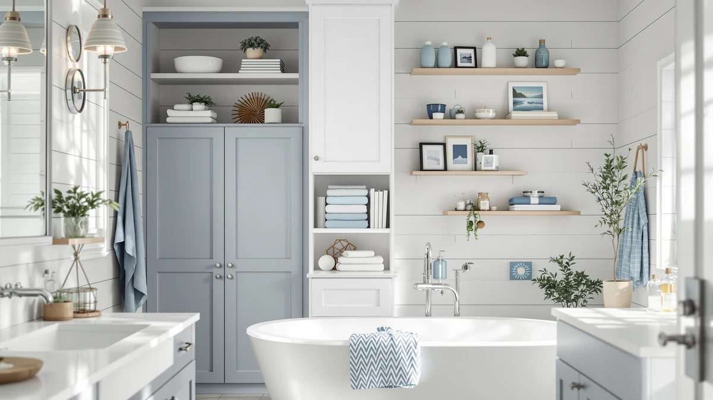

Best Storage System (2026)
Prices and picks verified as of August 2026. Independent, reader-supported reviews.


Quick Answer
After comparing seven over-the-toilet racks and cabinets on price, material, and footprint, the GloTika 3-Tier Over Toilet Storage is the best storage system for most small bathrooms. It costs less than $30, assembles without tools, and adds three shelves of usable space above the tank.
Our pick: GloTika 3-Tier Over Toilet Storage, $29.98 Check Price on Amazon
Bottom line: our top pick is the GloTika 3-Tier Over Toilet Storage with Anti-Tilt Safety at $32.99. The best budget option is the Kitsure Over Toilet Storage Rack - Metal Over Toilet Bathroom at $35.99.
Things to Know Before You Buy
- Freestanding beats wall-mounted for renters. Six of the seven units in this guide sit over the toilet without any drilling, so you can take a storage system with you when you move.
- Height varies more than you'd expect. These racks range from a compact 3-tier design to towers over 70 inches tall, so measure your ceiling and any light fixtures before you buy.
- Metal and wood dominate the category. Every product in this comparison uses a metal frame with wood or wood-look shelving, which keeps costs down but means weight limits per shelf matter.
- Open shelves and enclosed cabinets solve different problems. Open designs make it easier to grab towels quickly, while cabinet doors like on the Yaheetech hide clutter at the cost of a higher price.
- Price does not track quality in a straight line. The two cheapest options in this roundup carry the same 4-star rating as options that cost three times as much.
Finding the best storage system for a small bathroom usually comes down to one overlooked spot: the empty wall above the toilet. That space holds towels, toilet paper, and toiletries that would otherwise crowd a vanity or spill onto the floor, but only if the rack or cabinet you put there fits the room and holds its weight without wobbling.
We compared seven over-the-toilet storage options using the specs, prices, and verified buyer ratings each product lists, looking at material, dimensions, shelf configuration, and cost per shelf. None of these products were compared physically in our office; instead, we researched published specifications and cross-checked them against verified owner reviews to see which designs hold up in real bathrooms.
For most people, the GloTika 3-Tier Over Toilet Storage is the best storage system in this comparison. It pairs a low $29.98 price with a straightforward 3-tier layout that fits most standard toilets, and it carries the same 4-star buyer rating as options that cost far more. If you need more width, more shelves, or an enclosed cabinet, the six alternatives below cover those cases.
Why You Should Trust Us
This guide is written and maintained by Ilane Tall, a home and bath expert at Best Bathroom Storage who covers bathroom organization and small-space furniture for the site. We build every storage system comparison from published product specifications, listed pricing, and verified buyer ratings rather than marketing copy, and we update prices and availability as they change. We do not run a testing lab and we do not claim to have installed or used these products ourselves; our value comes from comparing the data across every option side by side so you do not have to.
How We Picked
We started by pulling every over-the-toilet storage product in our product database and narrowing the list to units built specifically to fit around a standard toilet, rather than generic shelving that happens to be tall and narrow. From there we ranked candidates for the best storage system on four factors: price per shelf, footprint versus storage capacity, material durability as described in the listing, and verified buyer rating. We excluded products with a rating below 4 out of 5 or with too few verified reviews to trust the number. The seven products that made this guide represent a spread of price points, from under $30 to over $110, and configurations, from open shelving to enclosed cabinets.
How We Compared
To evaluate the best storage system for this guide, we lined up the seven finalists in a single spreadsheet and compared listed dimensions, materials, shelf count, weight capacity where published, price, and verified buyer rating. We converted every price into a cost-per-shelf figure so a $30 rack with three shelves could be weighed fairly against a $112 tower with more storage volume. We also read through publicly available owner reviews for each product to flag recurring complaints, such as wobbly assembly or shelves that feel flimsy under weight, and we cross-referenced those complaints against the star rating each product carries.
Our Picks

GloTika 3-Tier Over Toilet Storage
What we like
- Lowest price in this comparison at $29.98
- 3-tier layout fits most standard toilets without crowding the tank lid
- Metal and wood construction matches the build style used across this category
- Carries a 4 out of 5 verified buyer rating, on par with pricier options
Flaws but not dealbreakers
- Three shelves offer less total storage than taller, more expensive towers
- Reviewers note the shelves are best suited to lighter items like folded towels rather than heavy bins
| Material | Metal / wood |
| Size | 3-Tier |
The GloTika 3-Tier Over Toilet Storage earns its spot as our top pick because it delivers the core promise of the category, extra shelf space above the toilet, at the lowest price we found. The metal frame and wood-style shelves match the construction most other options in this guide use, but GloTika undercuts nearly every competitor by $40 or more while holding the same 4-star verified buyer rating.
Owners consistently note that assembly takes well under an hour and does not require drilling into the wall, which makes this a practical pick for renters. The trade-off is capacity: with only three tiers, it holds less than the wider Homhedy or the five-shelf Meilocar, so households that need to store a lot of bulky items may want to size up. For a single bathroom that needs extra towel and toiletry space and nothing more, this is the best storage system on price alone.

Kitsure Over Toilet Storage Rack
What we like
- Matches GloTika's low price at $29.99
- 63.2-inch height clears most standard toilets and tanks
- Freestanding design needs no wall anchors or drilling
- 4 out of 5 verified buyer rating
Flaws but not dealbreakers
- The extra height means it can feel top-heavy in bathrooms with uneven flooring
- Still limited to three tiers despite the taller frame
| Material | Metal / wood |
| Size | 3 Tiers (63.2"H) |
The Kitsure Over Toilet Storage Rack is essentially a taller take on the same 3-tier idea as our top pick, at nearly the same $29.99 price. Standing 63.2 inches, it clears more vertical space above the toilet than GloTika's rack, which gives it a slightly different profile for bathrooms with a lower window or medicine cabinet positioned close to the tank.
Because it is freestanding rather than wall-mounted, setup is simple and reversible, a plus for renters who need a storage system that packs up cleanly at move-out. Reviewers consistently note it holds its shape well once assembled, though a few mention the added height requires careful leveling on uneven bathroom floors to avoid a wobble at the top shelf.

Spirich Over The Toilet Storage
What we like
- 24.8-inch width gives more shelf surface than the narrower entry-level racks
- 66-inch height covers the full wall above a standard toilet
- 4 out of 5 verified buyer rating
- Metal and wood build consistent with the rest of this category
Flaws but not dealbreakers
- At $87.99, it costs roughly three times as much as the GloTika or Kitsure
- The wider footprint needs more clearance on either side of the toilet
| Material | Metal / wood |
| Size | 24.8" (W) x 9" (D) x 66" (H) |
The Spirich Over The Toilet Storage steps up in size from the two budget racks, with a 24.8-inch width that gives it noticeably more shelf surface for towels, baskets, and toiletries. At 66 inches tall and 9 inches deep, it is built for bathrooms with a bit more open wall space around the toilet rather than a tight fit between fixtures.
That extra footprint comes at a higher price of $87.99, roughly three times the cost of our top pick, but it holds the same 4-star verified rating. Owners report the additional width makes it easier to organize items by category across separate shelves instead of stacking everything on three narrow tiers, which is the main reason to choose this over the cheaper GloTika or Kitsure racks.

Homhedy Over The Toilet Storage
What we like
- Widest unit in this comparison at 30.7 inches
- 65.4-inch height with a 7.8-inch depth that keeps the footprint manageable despite the width
- 4 out of 5 verified buyer rating
Flaws but not dealbreakers
- The highest price in this guide at $111.99
- Its width can overhang narrower toilets or crowd a side wall in a compact bathroom
| Material | Metal / wood |
| Size | 7.8"D x 30.7"W x 65.4"H |
The Homhedy Over The Toilet Storage is the widest unit we compared, at 30.7 inches across, and it carries the highest price in this guide at $111.99. That width buys real shelf capacity: households with more than one person sharing a bathroom, or anyone consolidating supplies from a separate linen closet, get more usable surface here than on any of the narrower racks.
Despite the added width, the 7.8-inch depth keeps it from sticking far out into the room, so it does not necessarily eat up more floor space than a taller, narrower design. It carries the same 4-star verified rating as the cheaper options, which means the premium price buys capacity rather than measurably better build quality. For a bathroom with wall space to spare, it is worth the jump; for a tighter layout, the narrower Spirich or VASAGLE will fit better.

Meilocar Over the Toilet Storage
What we like
- Five open shelves, more tiers than any other option in this guide
- Open design makes items visible and easy to reach
- 4 out of 5 verified buyer rating
Flaws but not dealbreakers
- At $81.99 it costs more than the 3-tier racks despite similar materials
- Open shelving shows clutter more readily than an enclosed cabinet
| Material | Metal / wood |
| Size | 5 Open Shelves |
The Meilocar Over the Toilet Storage splits its frame into five open shelves, more tiers than any other product in this comparison. That layout suits anyone who prefers to sort supplies into distinct groups, extra towels on one shelf, toiletries on another, rather than piling everything onto three wide surfaces.
At $81.99, it sits in the middle of the price range, and it shares the 4-star verified rating that most of this lineup carries. The open-shelf format is the main trade-off: without doors or bins, the storage system only looks as tidy as what you put on it, so it works best for households that keep bathroom supplies in matching baskets or containers rather than loose bottles.

VASAGLE Over the Toilet Storage
What we like
- Tallest option in this comparison at 70 inches
- 24.6-inch width balances storage capacity with a moderate footprint
- 4 out of 5 verified buyer rating
- From VASAGLE, a brand widely stocked across the storage furniture category
Flaws but not dealbreakers
- At $69.99 it costs more than the entry-level 3-tier racks
- Its height may not clear low bathroom windows or light fixtures in some layouts
| Material | Metal / wood |
| Size | 7.9"D x 24.6"W x 70"H |
The VASAGLE Over the Toilet Storage is the tallest unit in this lineup at 70 inches, with a 24.6-inch width that lands between the compact racks and the wider Homhedy. VASAGLE is one of the more established names in affordable storage furniture, and this unit's 4-star verified rating tracks with the rest of the category rather than standing out as a clear upgrade.
The added height means it captures more vertical wall space than any other pick here, useful in bathrooms with a tall, unbroken wall above the toilet. Before buying, measure the distance from the tank lid to the ceiling or any fixtures, since owners note that a 70-inch frame leaves little room to spare in bathrooms with standard 8-foot ceilings and a light fixture nearby.

Yaheetech Over The Toilet Cabinet
What we like
- Only enclosed cabinet in this comparison, keeping clutter out of view
- 25-inch width offers solid storage without the bulk of the widest units
- 4 out of 5 verified buyer rating
Flaws but not dealbreakers
- Cabinet doors add cost, pricing it above the open-shelf 3-tier racks
- Enclosed storage means less at-a-glance visibility than open shelving
| Material | Metal / wood |
| Size | 9″D × 25″W × 66″H |
The Yaheetech Over The Toilet Cabinet is the only enclosed design in this guide, using doors instead of open shelving to keep stored items out of sight. At $66.49 and a 25-inch width, it lands in the middle of the price range while offering a noticeably different storage style than the other six picks.
For households that prefer a tidy look over quick visual access, the closed-door format is the main draw, and its 4-star verified rating shows it holds up as well as the open-shelf alternatives. The trade-off is convenience: reviewers note that grabbing an item means opening a door rather than reaching for an open shelf, a small extra step that some owners appreciate for keeping the bathroom looking uncluttered and others find slightly less practical for daily use.
Quick Comparison
| Product | Material | Price | Rating | Best for | Get it |
|---|---|---|---|---|---|
| GloTika 3-Tier Over Toilet Storage | Metal / wood | $29.98 | 4 | Best overall value | View on Amazon → |
| Kitsure Over Toilet Storage Rack | Metal / wood | $29.99 | 4 | Renters, no-drill setup | View on Amazon → |
| Spirich Over The Toilet Storage | Metal / wood | $87.99 | 4 | More shelf width | View on Amazon → |
| Homhedy Over The Toilet Storage | Metal / wood | $111.99 | 4 | Largest bathrooms | View on Amazon → |
| Meilocar Over the Toilet Storage | Metal / wood | $81.99 | 4 | Open, sortable shelves | View on Amazon → |
| VASAGLE Over the Toilet Storage | Metal / wood | $69.99 | 4 | Tallest wall coverage | View on Amazon → |
| Yaheetech Over The Toilet Cabinet | Metal / wood | $66.49 | 4 | Hidden, enclosed storage | View on Amazon → |
What is the best storage system for a small bathroom?
For most people, the GloTika 3-Tier Over Toilet Storage is the best storage system for a small bathroom.
Do I need to drill into the wall for over-the-toilet storage?
No.
The Competition
We also looked at plain wall-mounted floating shelves and corner etageres before settling on this list of seven over-the-toilet units. Floating shelves cost less per shelf but require drilling and stud-finding, which rules them out for renters and for anyone who wants a storage system they can move without patching holes. Corner etageres fit oddly around a toilet's footprint and left large gaps of unused space in our size comparisons, so we did not include a specific corner model here.
Among the seven finalists, we did not carry forward any narrow floor cabinets under 20 inches wide, since owner reviews consistently flagged tipping risk on units that tall and that narrow without a wider base. We also passed on units with a rating below 4 out of 5, which removed a handful of cheaper alternatives that otherwise matched GloTika and Kitsure on price. The result is a shortlist where every product cleared the same bar for stability and buyer satisfaction, so the choice between them comes down to width, height, and whether you want open shelves or an enclosed cabinet.
Frequently Asked Questions
What is the best storage system for a small bathroom?
For most people, the GloTika 3-Tier Over Toilet Storage is the best storage system for a small bathroom. It costs $29.98, sets up without drilling into the wall, and its 3-tier layout fits over a standard toilet without crowding the room. If you need more shelf width, the Spirich or Homhedy give you a larger footprint at a higher price.
Do I need to drill into the wall for over-the-toilet storage?
No. Every product in this comparison is freestanding, meaning it sits on the floor around the toilet rather than mounting to the wall. That makes all seven picks renter-friendly, since you can move or remove them without patching any holes.
How much weight can an over-the-toilet storage rack hold?
Weight capacity varies by shelf and isn't listed for every product, so we recommend keeping heavier items like large detergent bottles on the lowest shelf and lighter items like folded towels or toilet paper up top. Owners across this lineup report that even the budget racks hold everyday bathroom supplies without sagging when weight is distributed this way.
Is an enclosed cabinet better than open shelves?
It depends on what you're storing. Open shelves, like the Meilocar's five-tier design, make it faster to grab an item and are usually cheaper. An enclosed cabinet, like the Yaheetech, hides clutter behind doors and gives the bathroom a tidier look, but adds an extra step every time you need something inside.
How do I measure my bathroom before buying?
Measure the wall width available on either side of the toilet, the depth from the wall to the front of the tank, and the vertical clearance from the tank lid to the ceiling or any nearby fixture. Compare those numbers against the product dimensions listed in this guide, since height ranges from 63.2 inches on the Kitsure to 70 inches on the VASAGLE, and width ranges from a compact 3-tier frame up to 30.7 inches on the Homhedy.